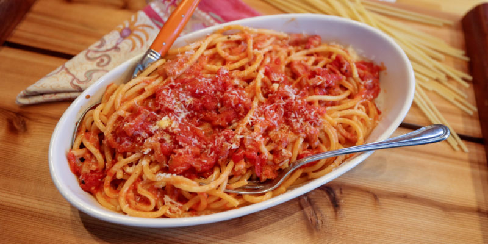

Pasta Recipe

This homemade pasta recipe is our new favorite cooking project! Lately, Jack and I have been spending even more time than usual in the kitchen, experimenting with bread, baked goods, and even okonomiyaki. But we keep coming back to homemade pasta. It’s super fun to make together, and it only requires a handful of basic ingredients. Of course, the fact that it’s absolutely delicious doesn’t hurt either.
ingredients
You only need 4 ingredients to make delicious fresh pasta at home, and there’s a good chance you have all of them on hand already:
- All-purpose flour: In the past, I thought you needed 00 flour or semolina flour to make great fresh pasta, but this homemade pasta recipe proved me wrong. In it, regular all-purpose flour yields chewy, bouncy noodles every time.
- EggsThe key ingredient for adding richness and moisture to the dough!
- Olive oil: Along with the eggs, a splash of olive oil moistens the dough and helps it come together.
- Salt Add it to the dough and the pasta water for the best flavor
Steps:
just follow the following steps
- First, make a nest with the flour on a clean work surface. Add the remaining ingredients to the center and use a fork to gently break up the eggs. Try to keep the flour walls intact as best as you can!
- Next, use your hands to gently mix in the flour. Continue working the dough to bring it together into a shaggy ball.
- Pour the yeast-and-warm-water mix, along with the other ingredients, into the “crater” of the volcano.
- Knead everything together for 10 to 15 minutes until the dough is smooth and elastic, keeping your surface floured.